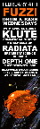
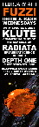

In my day job, I specialize in rapidly creating intuitive, database driven web applications using PHP, MySQL, Javascript, CSS and other standard development languages and tools.
In my free time I've worked on a number of different projects, including running a web-based music shop, promoting electronic music events, and working on original art and graphic design for both print and the web. I'm really into learning new things, spitballing ideas and letting my imagination run wild.
I have been into computers since I wrote my first BASIC code on a TRS-80,
and social computing since I ran a Renegade BBS in highschool.
I've been in the internet-centric tech industry for over 15 years.
I'm interested in many topics, and try to find the time to learn new things.
I was born and raised in Pittsburgh, and love my city.
Pick one or read below
PDF | MS Word | JSON | Formatted JSONGeoffrey Maddock
geoff.maddock@gmail.com50 Pasadena Street, Pittsburgh PA 15211 412.320.1476
Education
- Computer Science - University of Pittsburgh (1995-1999)
-
- Bachelor of Science in Computer Science; Math Minor.
- Applicable coursework: Database Management Systems, Data Structures and Algorithms, Programming Languages, Operating Systems, Artificial Intelligence
- Programmer - Expedient Communications (2003 - Present)
-
- Web Application Developer for the Systems department at this national ISP and Datacenter.
- ADHOC programming working on various projects primarily in PHP (LAMP stack) and Javascript, and working with MySQL DBMS and Oracle on a daily basis.
- Designed a number of mission critical applications for the company including an asset tracking system, purchase tracking system, sales quote application, delivery implementaion tools, customer support CMS, incident reporting and reports for all teams across the company.
- Expert at the Symphony 1.4 framework, which was used as the foundation of several of our internal applications
- Rigourous use of tools such as Git for version control, Putty SSH, Sublime Text, VI, Bash, Linux and Windows OS.
- Maintained and wrote new reports on the Crystal Reports platform.
- ISP Support and NOC Agent - Stargate Industries (1999-2003)
-
- Started as telephone tech support, for ISP including dialup, ISDN, DSL, T1, webhosting, email, VPN, and networking.
- Was a shift leader for 2 years, helping with new hire training and escalated issues.
- Moved to Network Operations in 2001, handling escalated customer issues, advanced troubleshooting and vendor interation.
- Designed a CRM for Customer Management, which lead me to being hired as a web developer.
- Owner and Operator - Wrecked Distribution (2001-Present)
-
- Sole proprietorship - I am the founder and sole employee
- Web-based mail order and in person sale of experimental electronic music.
- Designed website from the ground up, including front end design, shopping cart, inventory management and other admin tools.
- Handle buying from international labels and distros, filling orders and accounting.
- Design promotional flyers, as well as organize and promote related events.
- Help Desk - UPMC Falk Library Media Lab (1998-1999)
-
- Help Desk assistant at this UPMC and University of Pittsburgh computer lab.
- Assisted patrons with office software, graphics, scanners, printers and general questions on Mac and Windows platforms.
- Independant Music Promoter (1998-Present)
-
- Organized and promoted music events.
- Booked talent, sound, lighting and venues. Involved with all aspects of promotion and day-off footwork.
- Designed website, promotional posters and flyers for the events.
- Programming
-
- Highly proficient with PHP, Java, C++, Perl. Strong foundation of underlying programming concepts, OOP, design patterns and best practices.
- Experienced in building database driven websites using current standards including PHP, MySQL, HTML, CSS, Javascript. Worked extensively with the Symfony MVC framework.
- Design
-
- Highly proficient with Adobe Photoshop and Illustrator.
- Experienced in freehand and digital graphic design, from prototyping, editing, revising and preparing to print.
Overview.
I have written mission critical web-applications for Expedient, a multi-city network and datacenter provider, including Asset Tracker, Purchase Tracker, Quote Tracker, and Sales and Commissions Tracking as well as tools for NOC Shift Reports, Outage Reporting and Systems Monitoring.
For my own business, Wrecked-Distro.com, I wrote a full featured shop site with a frontend that handles everything from user account creation to music previews, and shopping card checkout, and a backend that helps me manage my inventory, order fullfillment and financial reporting.
Code Samples.
Most of my best code is in private repos.
But I'll happily provide samples by request.
Visit my GitHub profile to see the contributions I've been making.
Design samples.
I regularly create graphic designs for events, for both web and print.
My primary tool is Adobe Photoshop CS5.

 



Promo projects.
I've been a promoter of live electronic and experimental music since 2008.
Here are some of the regularly branded events I have done over the years.


{kind=link}
{kind=link}
{kind=link}
{kind=link}
{kind=link}
{kind=link}
{kind=link}
{kind=link}